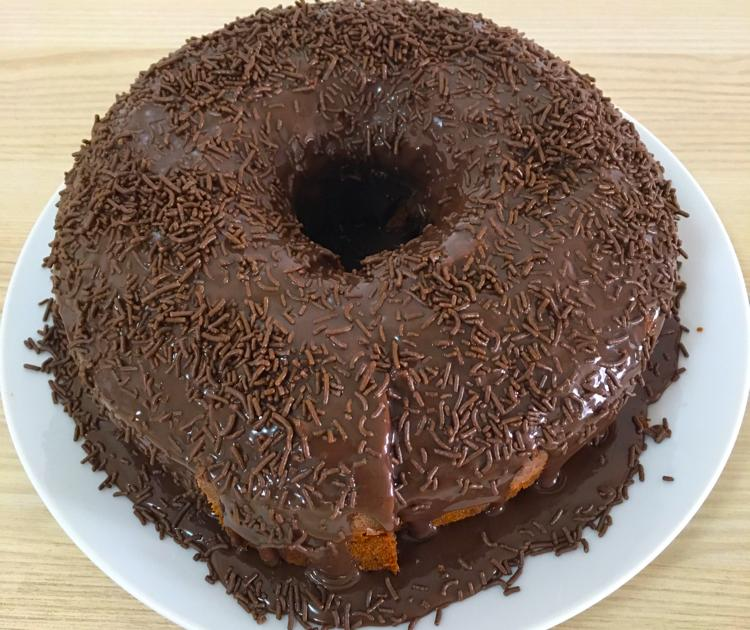

Bolo de chocolate
Ingredientes
Massa
- 4 ovos
- 2 colheres (sopa) de manteiga
- 2 xícaras (chá) de açúcar
- 1 xícara (chá) de leite
- 4 colheres (sopa) de chocolate em pó
- 3 xícaras (chá) de farinha de trigo
- 2 colheres (sopa) de fermento
Cobertura
- 2 colheres (sopa) de manteiga
- 2 latas de creme de leite com soro
- 7 colheres (sopa) de chocolate em pó
- 3 colheres (sopa) de açúcar
Modo de Preparo
Massa
- Em um liquidificador adicione os ovos, o chocolate em pó, a manteiga, a farinha de trigo, o açúcar e o leite, depois bata por 5 minutos.
- Adicione o fermento e misture com uma espátula delicadamente.
- Em uma forma untada, despeje a massa e asse em forno médio (180 ºC) preaquecido por cerca de 40 minutos. Não se esqueça de usar uma forma alta para essa receita: como leva duas colheres de fermento, ela cresce bastante! Outra solução pode ser colocar apenas uma colher de fermento e manter a sua receita em uma forma pequena
- Acrescente o creme de leite e misture bem até obter uma consistência cremosa
Calda
- Em uma panela, aqueça a manteiga e misture o chocolate em pó até que esteja homogêneo.
- Desligue o fogo e acrescente o açúcar.